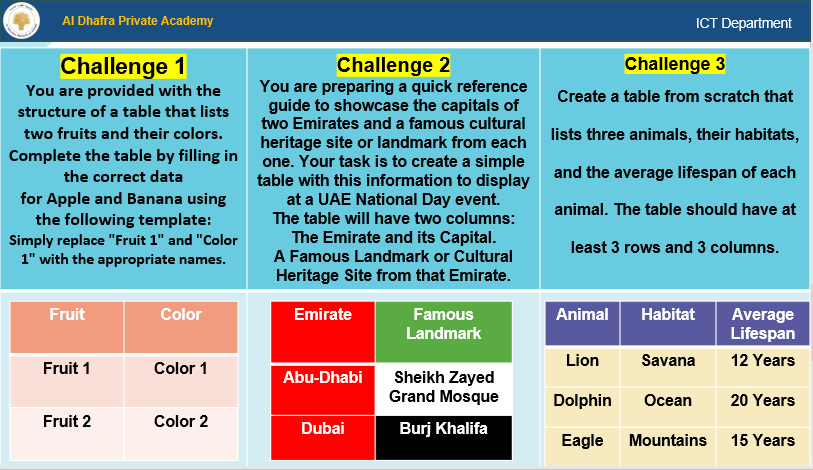
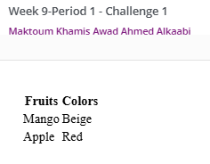
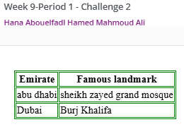
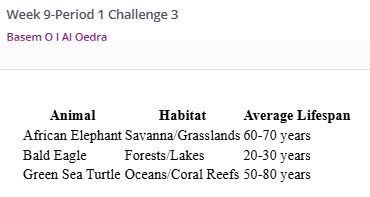

Work Samples from Various Levels
This section showcases samples of student work at different levels—beginner, intermediate, and advanced—demonstrating the application of differentiation strategies in teaching.
Beginner Level
Description: A foundational activity where students practiced basic concepts, such as completing the table by filling the correct data as a simple HTML document. Feedback focused on building confidence and understanding basic tags.
Intermediate Level
Description: Students expanded on their basic knowledge by creating a structured HTML Table with borders. Feedback included suggestions for improving structure and alignment.
Advanced Level
Description: An advanced Challenge where students developed a fully responsive HTML Table with at least three columns and three rows. Feedback emphasized refinement and optimization.